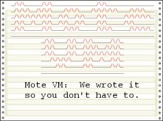

Though far from complete, Mote implements a language called Spec2.
The author of Spec2, Jim Baumgardner, wrote the language as a way to extend a MUD (multi-user game) while allowing builders to work in a simpler language than C and not requiring them to understand
the nitty-gritty details of CircleMUD internals.
Two reasons, really. The professional reason and the personal one.
The Professional reason:
I wanted to learn Javascript and I've never written a serious compiler nor VM before so it seemed like a perfect chance to do both at once.
The personal reason:
The Lady said, "That Jim guy is pretty smart. Could you write a language like that?"